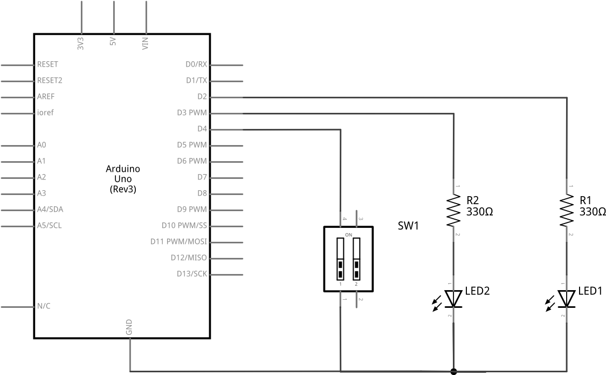
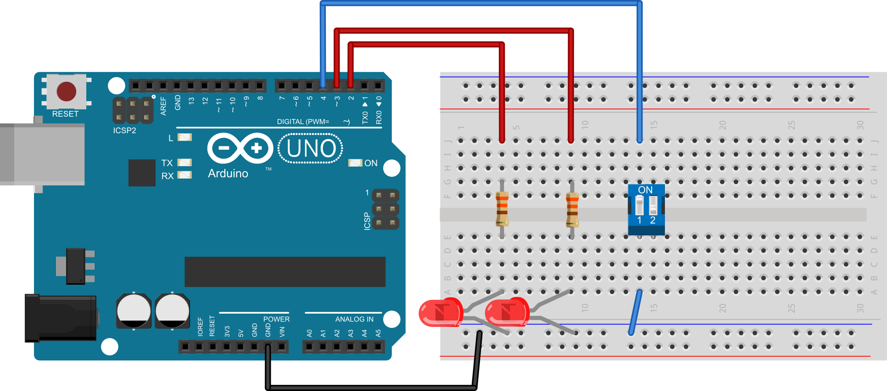

Poglavlje 4 · Tipkala i sklopke · Zadatak 18
18. Sklopka i dvije diode
Na mikrokontroler spojite jednu sklopku i dvije svjetleće diode. Napišite program koji će upravljati radom svjetleće diode na sljedeći način: kada je sklopka zatvorena neka je prva svjetleća dioda uključena, a druga svjetleća dioda neka blinka. Kada je sklopka otvorena neka prva svjetleća dioda blinka, a druga svjetleća dioda neka bude uključena. Svjetleće diode blinkaju u intervalima od pola sekunde.
Shema spajanja

Eksperimentalna pločica
Rješenje
int led1 = 2; //definiraj led1 = 2 int led2 = 3; //definiraj led2 = 3 int sklopka = 4; //definiraj tipkalo = 4 void setup() { pinMode(led1, OUTPUT); //postavi izvod led1 kao izlazni pinMode(led2, OUTPUT); //postavi izvod led2 kao izlazni pinMode(sklopka, INPUT_PULLUP); //postavi izvod tipkalo kao ulazni digitalWrite(led1, LOW); //isključi led diodu - početno stanje digitalWrite(led2, LOW); //isključi led diodu - početno stanje } void loop() { if(digitalRead(sklopka)==LOW){ //ako je sklopka zatvorena digitalWrite(led1, HIGH); //uključi LED diodu 1 digitalWrite(led2, HIGH); //uključi LED diodu 2 delay(200); //čekaj 200 ms digitalWrite(led2, LOW); //isključi LED diodu 2 delay(200); //čekaj 200 ms } else { //inače (ako je sklopka otvorena) digitalWrite(led2, HIGH); //uključi LED diodu 2 digitalWrite(led1, HIGH); //uključi LED diodu 1 delay(200); //čekaj 200 ms digitalWrite(led1, LOW); //isključi LED diodu 1 delay(200); //čekaj 200 ms } }